Soru 1Cevap: A
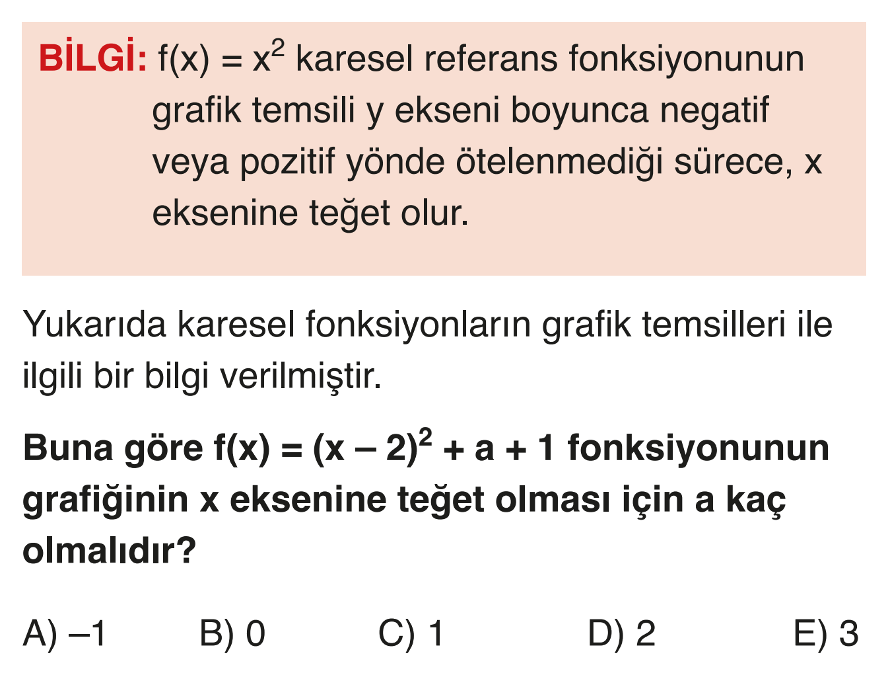
Çözüm
- $(x-2)^2+a+1$'in tepe noktası $(2,\,a+1)$.
- $x$ eksenine teğet olması için tepe $x$ ekseni üzerinde olmalı: $a+1=0$.
- $a=-1$ (A).
Cevap: A
Soru 2Cevap: A
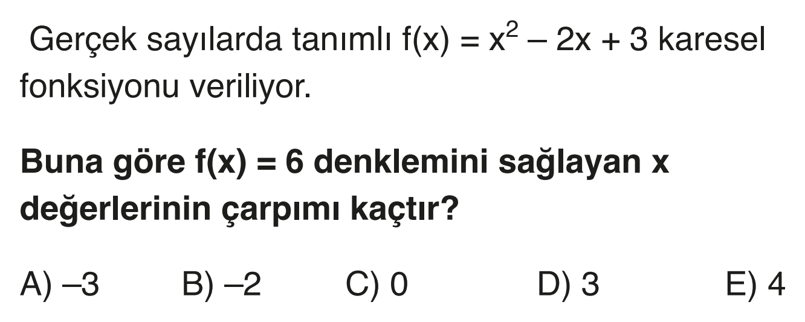
Çözüm
- $x^2-2x+3=6\Rightarrow x^2-2x-3=0$.
- $(x-3)(x+1)=0\Rightarrow x=3$ ya da $x=-1$.
- Çarpım $-3$ (A).
Cevap: A
Soru 3Cevap: B
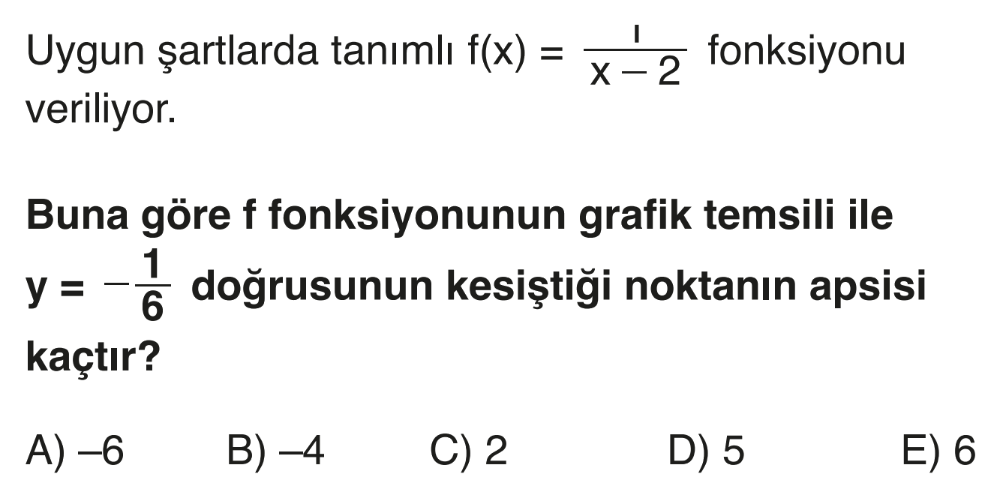
Çözüm
- $\dfrac1{x-2}=-\dfrac16$.
- $x-2=-6$.
- $x=-4$ (B).
Cevap: B
Soru 4Cevap: E
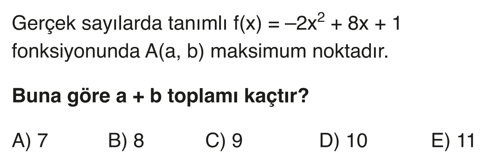
Çözüm
- Tepe apsisi $a=-\dfrac8{2\cdot(-2)}=2$.
- $b=f(2)=-8+16+1=9$.
- $a+b=11$ (E).
Cevap: E
Soru 5Cevap: C
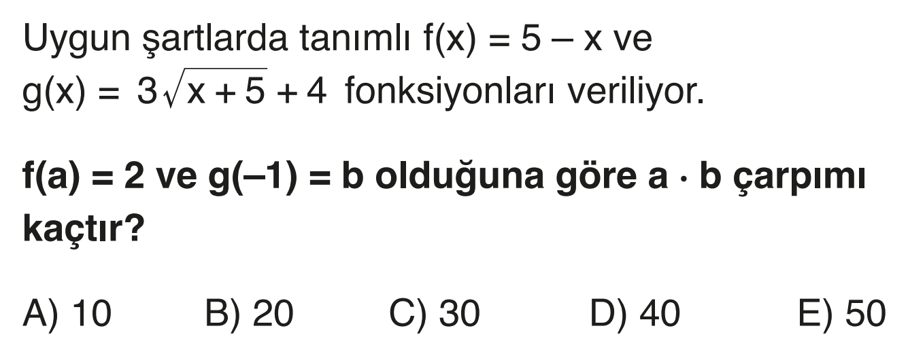
Çözüm
- $f(a)=5-a=2\Rightarrow a=3$.
- $b=g(-1)=3\sqrt4+4=10$.
- $a\cdot b=30$ (C).
Cevap: C
Soru 6Cevap: B
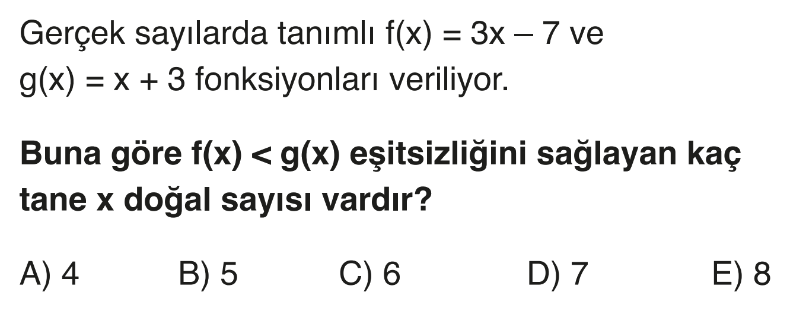
Çözüm
- $3x-7\lt x+3\Rightarrow2x\lt10$.
- $x\lt5$.
- Doğal sayılar $0,1,2,3,4$: $5$ tane (B).
Cevap: B
Soru 7Cevap: C
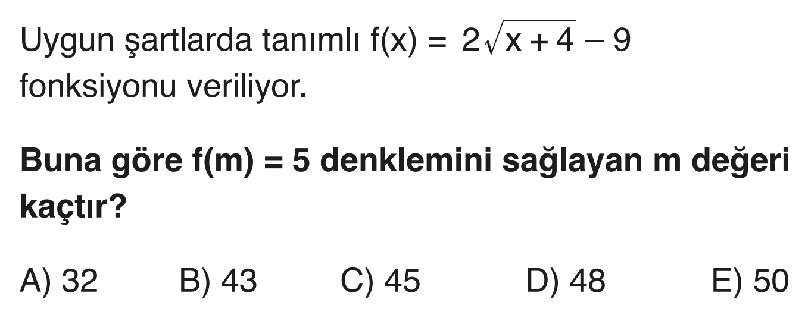
Çözüm
- $2\sqrt{m+4}-9=5\Rightarrow\sqrt{m+4}=7$.
- $m+4=49$.
- $m=45$ (C).
Cevap: C
Soru 8Cevap: C
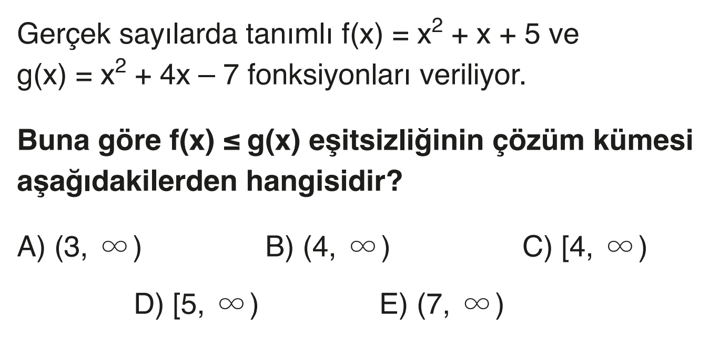
Çözüm
- $x^2+x+5\le x^2+4x-7$.
- $12\le3x\Rightarrow x\ge4$.
- Çözüm kümesi $[4,\infty)$ (C).
Cevap: C
Soru 9Cevap: D
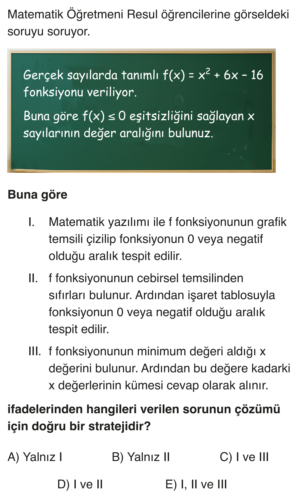
Çözüm
- I: grafikten $f\le0$ olan aralığı okumak doğru bir yoldur.
- II: sıfırları ($x^2+6x-16=(x+8)(x-2)$) bulup işaret tablosu kurmak doğrudur; çözüm $[-8,2]$.
- III: minimumun alındığı $x=-3$'e kadarki değerler cevap değildir: yanlış strateji. Cevap D.
Cevap: D
Soru 10Cevap: B
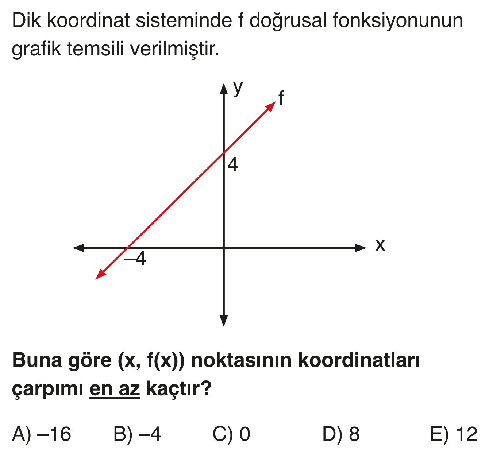
Çözüm
- Doğru $(-4,0)$ ve $(0,4)$'ten geçer: $f(x)=x+4$.
- Koordinatlar çarpımı $x(x+4)=(x+2)^2-4$.
- En az $-4$ (B).
Cevap: B
Soru 11Cevap: C
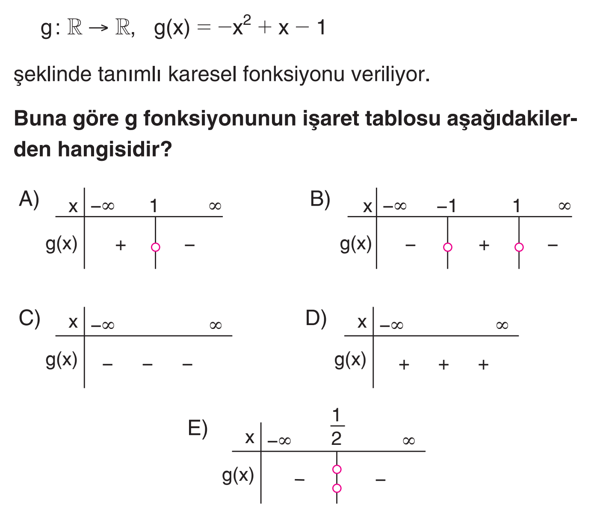
Çözüm
- $-x^2+x-1=-\left(x-\dfrac12\right)^2-\dfrac34$.
- Her $x$ için $g(x)\le-\dfrac34\lt0$: sıfırı yok.
- Tablo her yerde $-$ (C).
Cevap: C
Soru 12Cevap: D
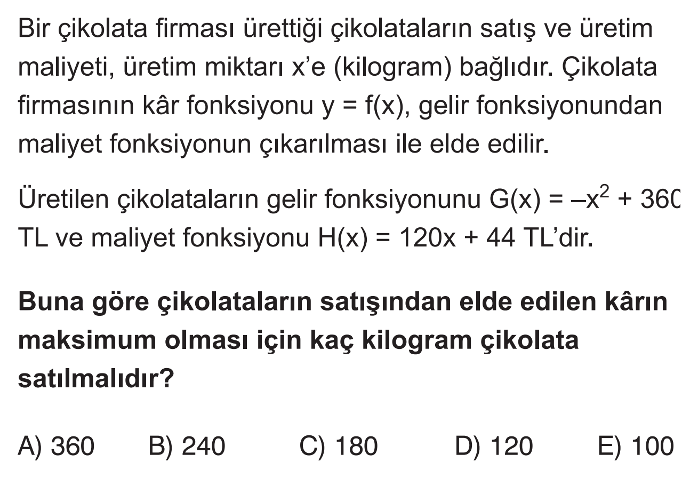
Çözüm
- Kâr $f(x)=G(x)-H(x)=-x^2+360x-120x-44=-x^2+240x-44$.
- $a\lt0$: en büyük değer tepe noktasında.
- $x=-\dfrac{240}{2\cdot(-1)}=120$ kg (D).
Cevap: D
Soru 13Cevap: C
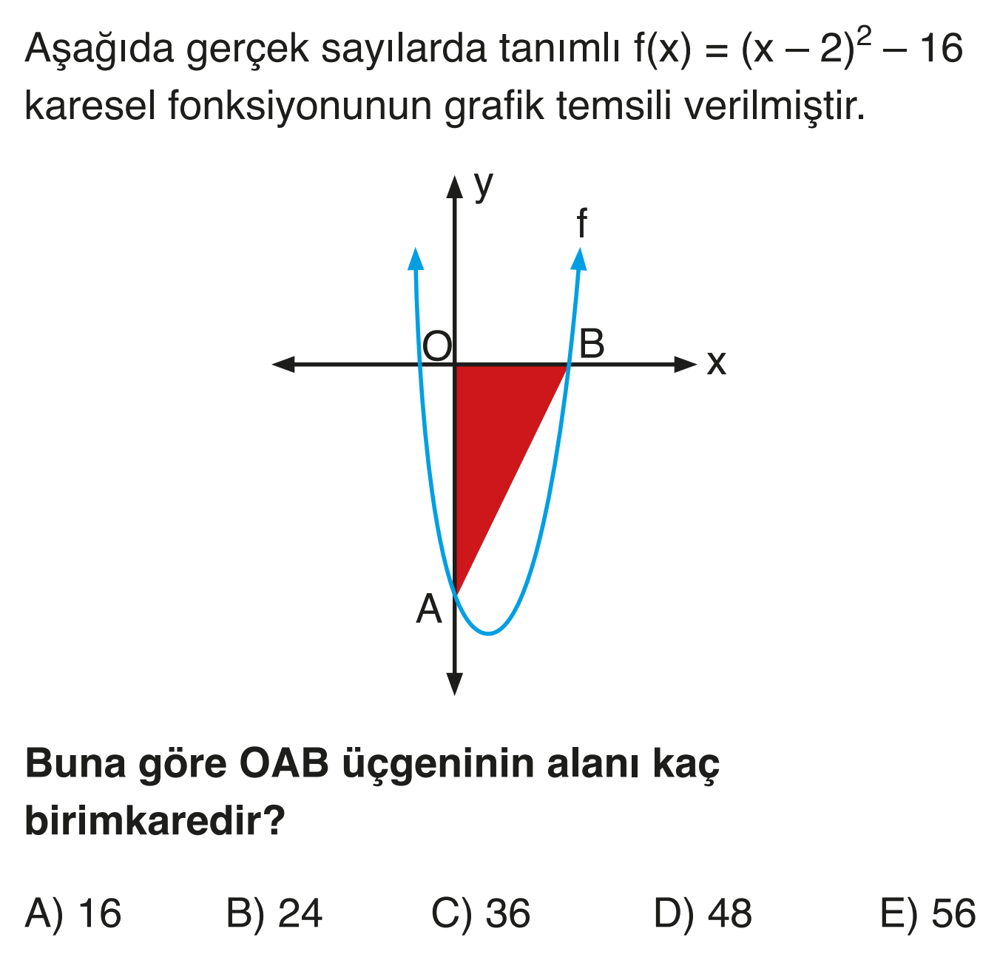
Çözüm
- $(x-2)^2-16=0\Rightarrow x=6$ ya da $x=-2$: $B(6,0)$.
- $f(0)=4-16=-12$: $A(0,-12)$.
- Alan $\dfrac{6\cdot12}2=36$ (C).
Cevap: C
Soru 14Cevap: D
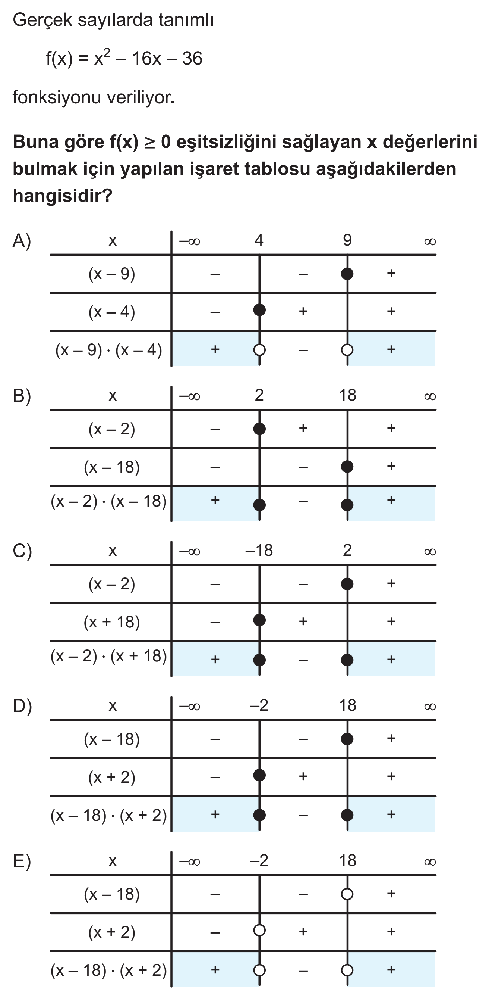
Çözüm
- $x^2-16x-36=(x-18)(x+2)$: kökler $-2$ ve $18$.
- Çarpanların işaretleri çarpılır: kökler dışında $+$, arasında $-$.
- $\ge0$ olduğu için kökler dahil (dolu nokta): D.
Cevap: D
Soru 15Cevap: D
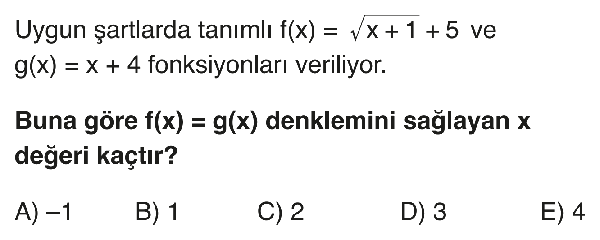
Çözüm
- $\sqrt{x+1}+5=x+4\Rightarrow\sqrt{x+1}=x-1$ ($x\ge1$).
- $x+1=x^2-2x+1\Rightarrow x^2-3x=0\Rightarrow x=0$ ya da $x=3$.
- $x\ge1$ şartıyla $x=3$ (D).
Cevap: D
Soru 16Cevap: D
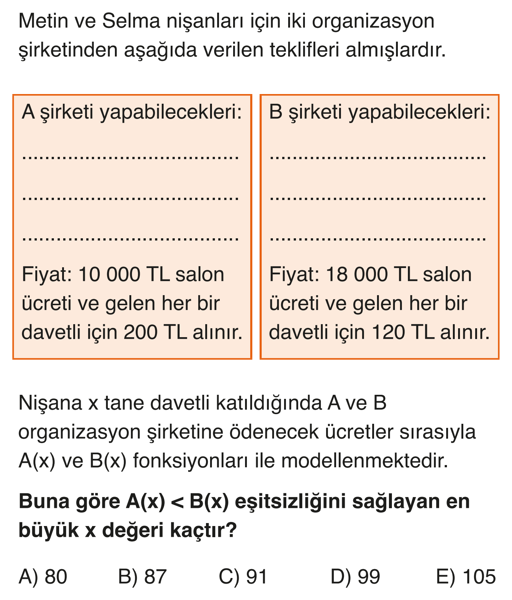
Çözüm
- $A(x)=10\,000+200x$, $B(x)=18\,000+120x$.
- $10\,000+200x\lt18\,000+120x\Rightarrow80x\lt8000\Rightarrow x\lt100$.
- En büyük $x=99$ (D).
Cevap: D
Soru 17Cevap: A
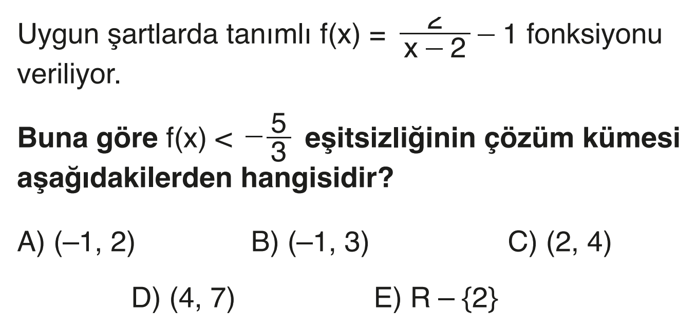
Çözüm
- $\dfrac2{x-2}-1\lt-\dfrac53\Rightarrow\dfrac2{x-2}\lt-\dfrac23$.
- Sol taraf negatif olmalı: $x-2\lt0$; iki taraf $x-2$ ile çarpılınca yön değişir: $2\gt-\dfrac23(x-2)\Rightarrow x-2\gt-3$.
- $-3\lt x-2\lt0\Rightarrow-1\lt x\lt2$ (A).
Cevap: A
Soru 18Cevap: D
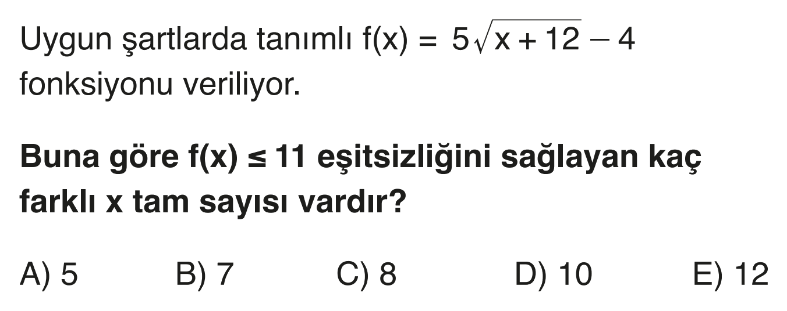
Çözüm
- $5\sqrt{x+12}-4\le11\Rightarrow\sqrt{x+12}\le3$.
- $0\le x+12\le9\Rightarrow-12\le x\le-3$.
- Tam sayılar: $10$ tane (D).
Cevap: D
Soru 19Cevap: A
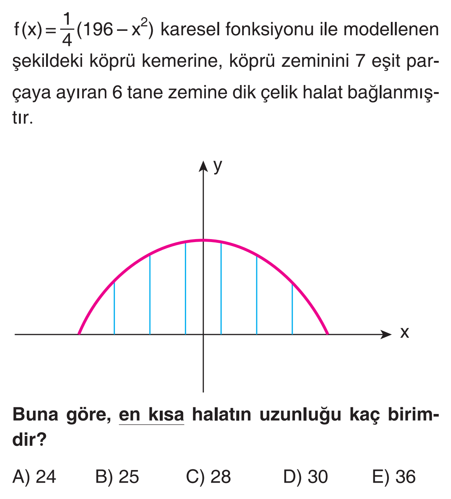
Çözüm
- Kökler $\pm14$: zemin $28$ birim, $7$ eşit parça $4$'er birim; halatlar $x=\pm2,\pm6,\pm10$'da.
- En kısa halat uçlara en yakın olan $x=\pm10$'dakidir.
- $f(10)=\dfrac{196-100}4=24$ (A).
Cevap: A
Soru 20Cevap: E
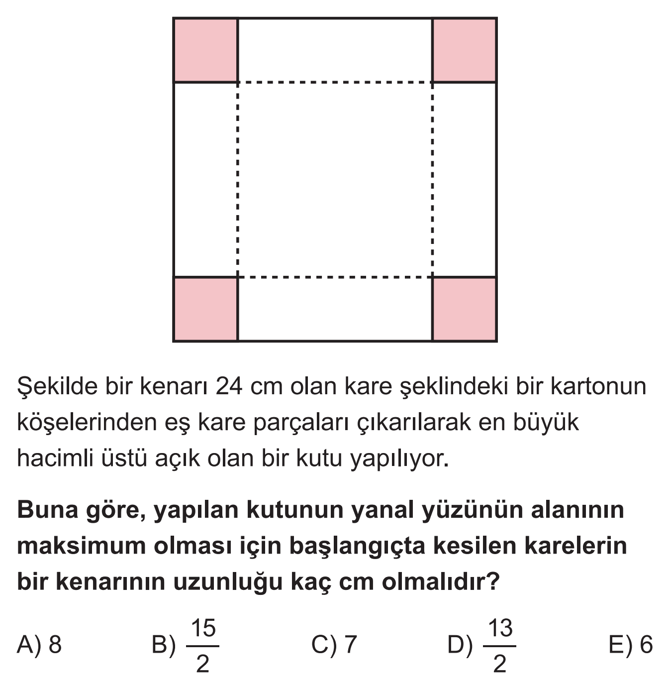
Çözüm
- Kesilen karenin kenarı $x$: kutunun tabanı $24-2x$, yüksekliği $x$.
- Dört yan yüzün alanı $A(x)=4x(24-2x)=8x(12-x)$.
- Kökler $0$ ve $12$; tepe orta noktada: $x=6$ cm (E).
Cevap: E